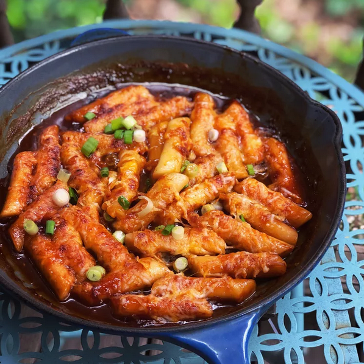

Tteokbokki

Description
Korean spicy rice cakes made with fish cakes, boiled eggs, and seasoned with chile paste. These rice cakes are chewy and tender, but also super spicy! Found easily at food vendors on the streets of Korea.
Ingredients
- 3 cups water
- 2 dried anchoives, or more to taste
Sauce
- 3 tablespoons chile paste
- 2 tablespoons white sugar
- 1 tablespoon soy sauce
- 1 tablespoon corn syrup
- 2 Korean fish cakes, sliced
- 1/2 onions, thickly sliced
- 1 spring onion, thickly sliced
Instructions
- Combine water and anchoives in a saucepan and bring to a boil. Cook for 10 mines. Remove anchovies
- Combine chile paste, sugar, soy sauce, and corn syrup in a bowl to make the sauce.
- Add rice cakes and onion to the anchovy water in the saucepan. Add sauce. Bring to a boil and cook for 5 minutes, stirring occasionally. Add spring onion and boil 3 minutes more.
Notes
Can be quite spicy, so make sure to check taste and control the amount of heat to your liking.